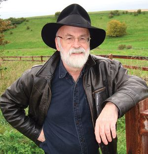

Sir Terry Pratchett
An english Novelist 1948 - 2015

Here's a Timeline of Terry Pratchetts Life
- 1948: On 28th April 1948 Terry Pratchett was born
- 1959: Pratchett passed his eleven plus exam earning a place at High Wycombe Technical High School
- 1962: He published his first short story in the High Wycombe Technical School magazine called "Business Rivals"
- 1971: He had his first writing breakthrough, Colin Smythe Ltd published his manuscript The Carpet People
- 1983: The first Discworld novel The Colour of Magic was published. This was to be the first of forty one novels published as part of the discworld series
- 1994: Pratchett was the British Book Awards' 'Fantasy and Science Fiction Author of the Year'
- 1996: Pratchett became the UKs top-selling and highert earning author
- 2009: Pratchett received a knighthood for "services to literature" in the 2009 UK New Year Honours list.
- 2007:Pratchett was diagnosed with early-onset Alzheimers disease
- 2009:The documentary about his illness was broadcast which went on to win a BAFTA award 2015: Pratchett writes his last book called The Shepherds crown
- 2015: Sir Terry Pratchett died at his home on the 12th March 2015